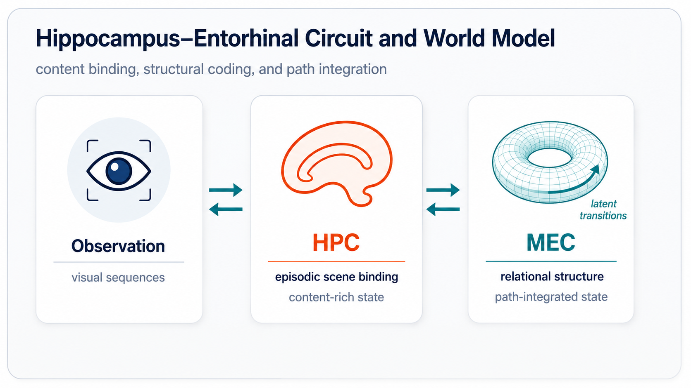
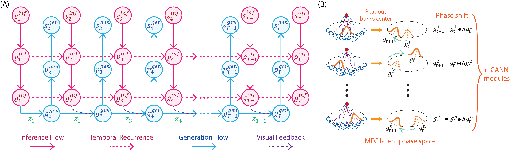
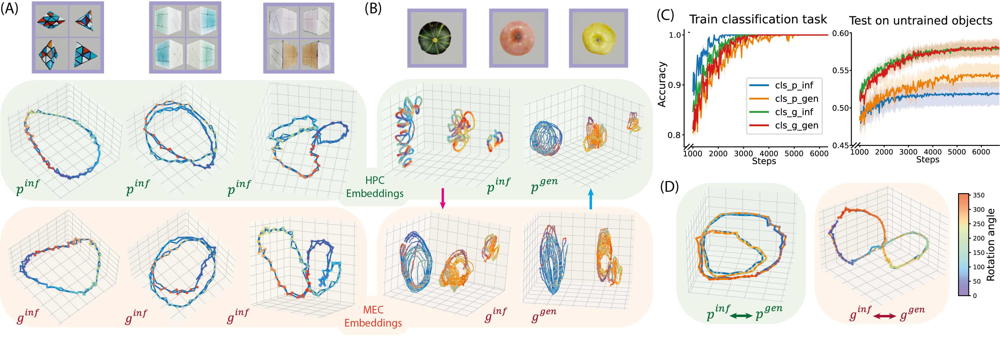
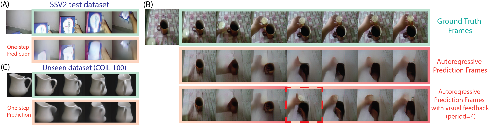
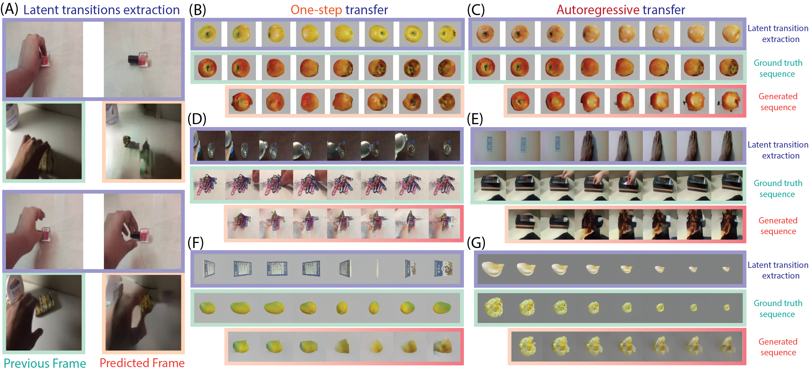

Encode observations
Frames are mapped to visual embeddings with a pretrained multi-scale VQ-VAE.
1Peking University 2HHMI Janelia
TL;DR: A hippocampal-entorhinal inspired world model separates content-rich episodic states from reusable transition structures, enabling prediction and zero-shot structural transfer across objects, scenes, and simulated environments.
Humans abstract experiences into structured representations to facilitate pattern inference and knowledge transfer. While the hippocampal-entorhinal (HPC-MEC) circuit is known to represent both spatial and conceptual spaces, the mechanisms for concurrently extracting abstract structures from continuous, high-dimensional dynamics remain poorly understood. We propose a brain-inspired hierarchical model that simultaneously infers latent transitions and constructs a predictive visual world model. Our architecture employs an inverse model for structural extraction alongside an HPC-MEC coupling model that dissociates relational structures (MEC) from integrated episodic scenes (HPC). Using primitive transformation dynamics as a benchmark, we demonstrate the model's capacity for structural abstraction. By leveraging velocity-driven path integration, the framework enables robust prediction and structural reuse across diverse contexts, thereby achieving structural generalization. This work provides a novel computational framework for understanding how brain-inspired, self-supervised learning of world models facilitates the acquisition of reusable abstract knowledge.
HPC-MEC Circuit
The hippocampal-entorhinal circuit suggests a useful division of labor: HPC binds content-rich episodic scenes, while MEC maintains compact relational structure and supports path integration. Our model turns this biological correspondence into a self-supervised visual world model.

Method
Video frames are encoded into observation embeddings, then lifted into hippocampal embeddings that preserve content-rich episodic details before being compressed into medial-entorhinal embeddings.
A CANN-inspired MEC dynamics module updates abstract states with velocity-like latent transitions, producing the next MEC embedding as a structured phase shift.
An inverse model distills consecutive MEC embeddings into low-dimensional latent transitions, encouraging transitions to capture content-free dynamics rather than appearance.

Observations are first embedded visually, then encoded into HPC states and compressed into MEC states.
The inverse model reads the difference between consecutive MEC embeddings and extracts content-free transition structure.
The transition acts like a velocity input, shifting the MEC state on a CANN-inspired manifold.
When observations are available, inferred MEC states correct accumulated path-integration error.
Manifold Analysis
The manifold analysis probes whether the hierarchy actually separates appearance from transition structure. Rotation datasets make this visible because objects can share the same transformation while differing in shape, texture, and periodicity.
MEC embeddings form cleaner shared rotation trajectories across objects, while HPC embeddings preserve more object identity. This matches the intended division: HPC binds scene-specific episodic content; MEC abstracts relational dynamics that can be reused.

| Probe | HPC state | MEC state | HPC transition | MEC transition | Latent transition |
|---|---|---|---|---|---|
| Transformation decoding accuracy | \(0.3330 \pm 0.0163\) | \(0.3486 \pm 0.0156\) | \(0.8386 \pm 0.0263\) | \(0.8868 \pm 0.0212\) | \(0.9064 \pm 0.0145\) |
| Robotic sequence cosine similarity | \(0.024 \pm 0.061\) | \(0.146 \pm 0.063\) | \(0.114 \pm 0.056\) | \(0.152 \pm 0.057\) | \(0.235 \pm 0.021\) |
Results
Once transition structure is separated from visual content, the model can use it in two ways: predict future observations and transfer dynamics into new visual contexts.
Abstraction
For one-step prediction, the model extracts a transition from the input video and generates the next frame with matching dynamics. In autoregressive rollouts, it composes latent transitions over time; visual feedback can then correct accumulated path-integration error.

Generalization
Latent transitions extracted from one sequence can be applied to another context. The generated frames preserve target-scene content while following source-sequence dynamics, demonstrating zero-shot structural reuse across human-object videos and simulated object transformations.

We evaluate OOD structure reuse by extracting latent transitions from a source sequence and applying them to a different target context. A successful model should preserve target content while following source dynamics. The ablations isolate the main design choices:
| Model | R one-step ↑ | R autoreg. ↑ | SSIM one-step ↑ | SSIM autoreg. ↑ | LPIPS one-step ↓ | LPIPS autoreg. ↓ |
|---|---|---|---|---|---|---|
| Our model w/ unified latent space | \(2.054 \pm 0.521\) | \(1.542 \pm 0.246\) | \(0.901 \pm 0.007\) | \(0.886 \pm 0.008\) | \(0.126 \pm 0.008\) | \(0.179 \pm 0.008\) |
| Our model w/o CANN | \(2.403 \pm 0.553\) | \(1.859 \pm 0.396\) | \(0.894 \pm 0.022\) | \(0.888 \pm 0.009\) | \(0.149 \pm 0.009\) | \(0.177 \pm 0.010\) |
| VQ-VAE ablation | \(2.035 \pm 0.229\) | \(1.796 \pm 0.173\) | \(0.892 \pm 0.009\) | \(0.883 \pm 0.009\) | \(0.158 \pm 0.009\) | \(0.177 \pm 0.009\) |
| Our model | \(3.201 \pm 0.435\) | \(2.482 \pm 0.460\) | \(0.902 \pm 0.010\) | \(0.891 \pm 0.009\) | \(0.120 \pm 0.008\) | \(0.156 \pm 0.008\) |
@inproceedings{zhang2026structure,
title = {Structure Abstraction and Generalization in a Hippocampal-Entorhinal Inspired World Model},
author = {Zhang, Tianqiu and Lyu, Muyang and Liu, Xiao and Wu, Si},
booktitle = {Forty-third International Conference on Machine Learning},
year = {2026},
url = {https://openreview.net/forum?id=AYXgo5FjYz}
}